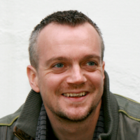

FULL NAME (preferred name to be listed on the public JavaOne website): Martijn Verburg
TITLE: CEO
COMPANY: jClarity
E-MAIL (preferred mail you'd like me to use moving forward to communicate w/you): martijnverburg@gmail.com
TWITTER HANDLE: @karianna
PROFESSIONAL BIO: Martijn Verburg is a leading expert on software methodology and technical team optimization, with years of experience in running large, distributed organizations. You can find him delivering presentations at major conferences, where he challenges the industry status quo as his alter ego The Diabolical Developer. Verburg is coleader of the London Java Community and leads the global effort for working on Java standards via the Adopt a JSR and Adopt OpenJDK programs. He was recognized as a Java Champion in 2012 for these contributions.
PERSONAL PHOTO: 